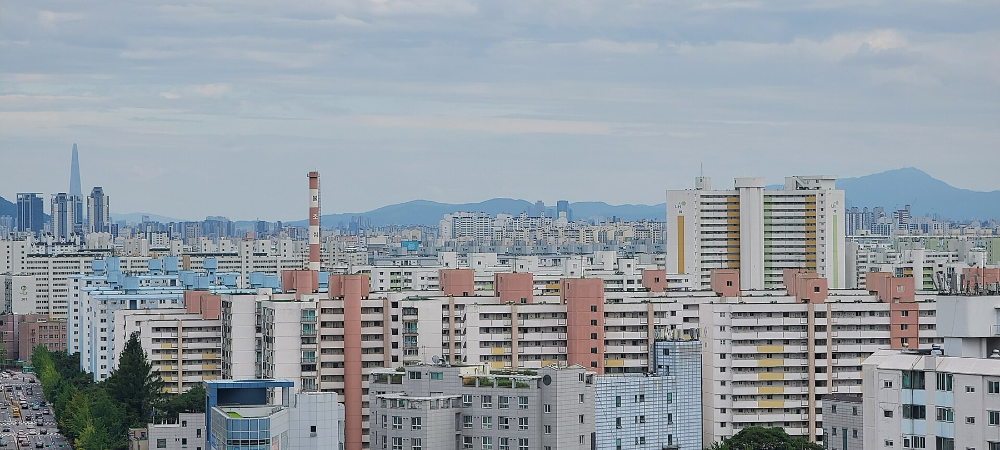
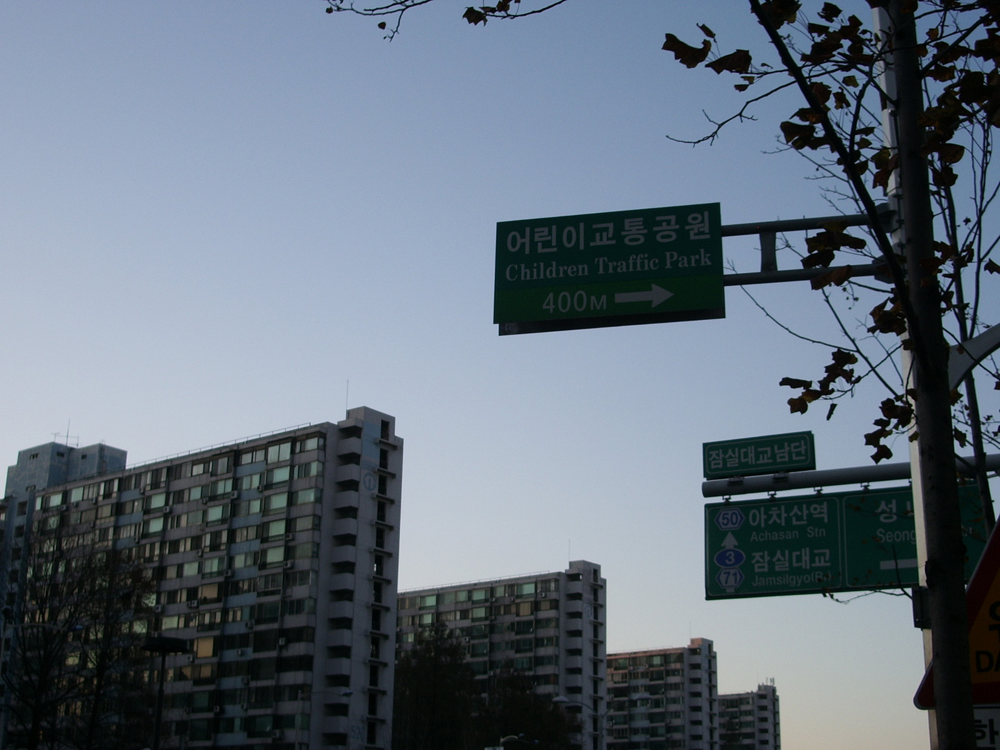

세입자 보증금,
대출로 될까요?
계약일, 주택 수, 지역만 고르면 지금 규정으로 되는지 바로 나옵니다. 전세퇴거자금이 필요한 집주인, 집이 있는데 전세를 구하는 분 모두 해당됩니다.
진단 없이 카카오톡 상담2026년 11월 9일 시행 규정 기준
- 제휴 금융사
- [00]곳
- 누적 상담
- [0,000]건
- 등록 대출모집인
- [제0000호] · 조회하기
- 위탁 금융회사
- [금융사명]
- 고객 수수료
- 0원, 요구하면 불법입니다
진단은 브라우저 스크립트가 필요합니다.
카카오톡 상담
같은 대출도
집 수와 계약일로 갈립니다
내 경우 카톡으로 묻기

- 1억수도권·규제지역 반환 목적 대출 상한기존 생활안정자금 대출과 합산하며 해마다 새로 생기지 않습니다 · 2025.6.28 시행원칙
- 1억 초과집 산 날과 전세계약이 모두 2025.6.27 이전이면 검토 가능자력 반환 불가, 보증금 반환에만 사용, 입주 시 1개월 내 전입·2년 거주 등 5개 요건 충족 시예외
- 40%규제지역 LTV2025.9 시행 · 6·27 이전 계약 건은 종전 기준 적용 여부를 은행에 확인합니다한도
- 40%은행권 DSR, 스트레스 금리 하한 3.0%2금융권은 50%소득
- 불가수도권·규제지역 2주택 이상은 반환 목적 주택담보대출을 받을 수 없습니다2025.6.28 시행원칙
- 확인분양권, 상속, 인구감소지역 주택 등 주택 수에서 빠지는 경우가 있습니다제외 대상이면 1주택 기준으로 다시 봅니다대안
- 확인지방에 있는 주택을 담보로 하면 금융사 자율 기준이 적용됩니다수도권 1억 상한과 2주택 제한이 걸리지 않습니다대안
- 제한수도권·규제지역 아파트 주담대 만기연장 불허2026.4.17 시행 · 기존 임대차 종료일까지는 연장 가능주의

- DTI 60%2023.7.3 이전 전세계약이면 DSR 40% 대신 적용2025.12.17 감독규정 개정으로 기한 없이 상시 적용특례
- 차액새 보증금으로 모자라는 금액만큼 빌립니다대출금은 세입자 계좌로 바로 지급됩니다구조
- 0.13%특례전세지킴보증 가입 필요 (아파트 기준 보증료)보증금 10억·주택 12억 이하, 계약기간 절반이 지나기 전 신청조건

- 상한 없음수도권·규제지역이 아니면 1억 상한이 적용되지 않습니다한도는 금융사가 정합니다원칙
- LTV · DSR담보가치와 소득으로 한도가 나옵니다DSR 은행 40% · 2금융 50%한도
- 3.6억보금자리론 임차보증금 반환 용도주택 6억 이하, 부부 연소득 7천만 원 이하, 담보주택 외 무주택 또는 1주택대안
- 30% · 60%기존 세입자 보증금 반환 목적이면 예외적으로 취급LTV 규제지역 30%, 비규제지역 60% · 2025.9 시행예외
- 1.25배임대소득이 대출 이자의 1.25배 이상 (RTI, 주택 기준)비주택은 1.5배소득
- 제한수도권·규제지역 아파트 대출은 만기연장이 안 됩니다2026.4.17 시행 · 의무임대기간 종료일까지는 예외주의
- 2억수도권·규제지역에 집이 있는 1주택자의 전세대출 한도주택금융공사 보증은 1.8억 (지방 2억)한도
- 이자 반영전세대출 이자가 DSR 계산에 들어갑니다수도권·규제지역 1주택자 · 2025.10.29 시행 · 증액 없는 연장은 제외소득
- 2027.1.1수도권 아파트를 세놓고 한 번도 안 살았다면 신규·연장 제한2026.12.31까지 계약하고 계약금을 냈거나 대출을 신청한 건은 종전 규정예정
- 불가부부 합산 2주택 이상은 공적 전세보증 3곳 모두 원칙상 불가처분해서 1주택이 되면 다시 진단합니다원칙
상담하면 받는 것
먼저, 카카오톡으로 진단 결과를 보내세요.
1억 초과 검토 대상 — 집주인 · 개인 · 서울 · 1채 · 계약 2023.7.4–2025.6.27
[채널명]
상담사 김○○입니다 (대출모집인 등록번호 ○○○○). 보내주신 결과 확인했습니다. 집을 산 날과 지금 전세계약일을 알려 주시겠어요?
그다음, 계약서 두 장의 날짜를 같이 봅니다.
- 집 산 날
- 2024. 3. 15
- 지금 전세계약일
- 2025. 2. 10
- 돌려줄 보증금
- 3억 2,000만 원
| 6·27 이전 취득·계약 | 해당 |
|---|---|
| 계약 중 집주인 변경 | 없음 |
| 1억 상한 | 예외 요건 검토 대상 |
마지막으로, 은행 기준 예상 범위를 받습니다.
| 필요한 금액 | 3억 2,000만 원 | 보증금 전액, 새 세입자 없음 |
|---|---|---|
| LTV 기준 | 3억 6,000만 원 | 시세 9억 × 40% |
| DSR 기준 | 약 3억 원 | 금리 5.3% + 스트레스 3.0%p, 30년 원리금균등 가정 |
| 예상 범위 | 약 3억 원 | 가장 낮은 기준(DSR)이 한도를 정합니다. 실제 한도는 은행 심사로 확정됩니다. |
자주 묻는 질문
-
원칙은 1억입니다. 다만 집을 산 날과 지금 전세계약이 모두 2025년 6월 27일 이전이고, 보증금을 직접 마련할 수 없는 등 5가지 요건을 지키면 1억을 넘겨 심사받을 수 있습니다. 요건을 어기면 대출을 바로 갚아야 할 수 있습니다.
-
수도권·규제지역 기준 2주택 이상이면 반환 목적 주택담보대출은 원칙상 안 됩니다. 분양권이나 상속 주택처럼 주택 수에서 빠지는 경우가 있는지, 지방 주택을 담보로 할 수 있는지부터 확인해 드립니다.
-
2023년 7월 3일 이전에 맺은 전세계약이라면 DSR 40% 대신 DTI 60%를 적용받을 수 있습니다. 이 특례는 2025년 12월부터 기한 없이 적용되며, 특례전세지킴보증 가입이 함께 필요합니다.
-
없습니다. 수도권·규제지역이 아니면 1억 상한 대신 금융사가 한도를 정합니다. 담보가치(LTV)와 소득(DSR) 기준은 그대로 적용됩니다.
-
받을 수 있지만 한도가 줄어듭니다. 그 집이 수도권·규제지역에 있으면 최대 2억이고, 전세대출 이자가 DSR 계산에 들어갑니다. 2027년부터는 세놓은 수도권 아파트에 한 번도 살지 않은 경우 신규와 연장이 제한됩니다.
-
주택금융공사, 주택도시보증공사, 서울보증 세 곳 모두 부부 합산 2주택 이상은 원칙상 보증하지 않습니다. 한 채를 처분해 1주택이 되면 다시 진단해 드립니다.
-
없습니다. 대출모집인은 고객에게 어떤 명목으로도 수수료를 받을 수 없습니다. 누군가 요구한다면 불법이니 금융감독원(1332)에 신고하세요.
-
아닙니다. [위탁 금융사]와 위탁계약을 맺은 등록 대출모집인입니다. 대출 계약은 금융사가 직접 체결하며, 등록번호는 은행연합회 대출모집인 통합조회에서 확인할 수 있습니다.
진단 결과를 들고
카카오톡으로 물어보세요.
진단을 했다면 결과가 복사되어 있습니다. 채팅창에 붙여넣기만 하세요. 평일 9시 – 18시에는 바로 답하고, 그 밖의 시간에는 다음 영업일 오전에 답합니다. 상담 중 신용조회는 하지 않으며 주민등록번호는 묻지 않습니다.
카톡이 어렵다면 번호를 남겨 주세요
- 카카오톡 채널
- [채널명] 채널 추가 · 추가해 두면 나중에 다시 찾기 쉽습니다
- 바로 통화
- 000-0000-0000 · 평일 9시 – 18시
- 담당 상담사
- [성명] · 대출모집인 등록번호 [제0000호] · 등록 조회